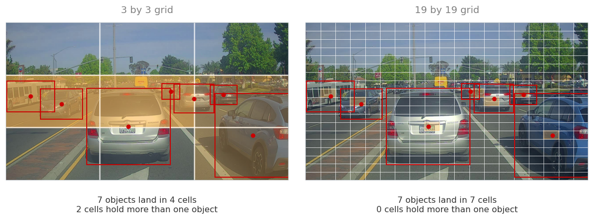
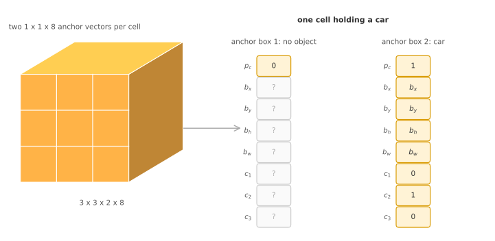
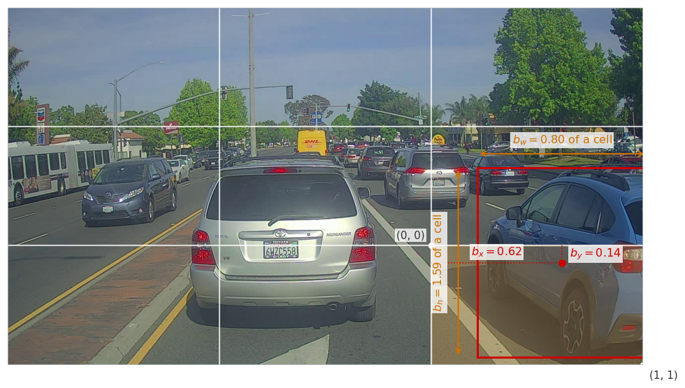

Bounding Box Predictions with YOLO
deep-learning
convolutional-neural-networks
computer-vision
object-detection
yolo
How placing a grid on the image and assigning each object to the cell holding its midpoint turns detection into one convolutional pass with precise boxes.
Sliding Windows and Region Proposals ended on a complaint. The convolutional sweep is fast, but the boxes it can report are the windows themselves, so they sit on a grid whose spacing comes from the pooling layers and they all have the shape of the window. A car is wider than it is tall, and no square window on a coarse grid frames it properly.
YOLO, meaning You Only Look Once, fixes that by asking the network for the box directly. The sweep is replaced by a grid, and every cell of that grid runs the localization idea from Object Localization, predicting its own \(b_x, b_y, b_h, b_w\) rather than choosing among fixed windows.
Grid of Cells
Place a grid over the image. Three by three is the size to think with, and it is far too coarse for real use, where 19 by 19 is typical. Each cell is then handed the classification with localization task, so each cell outputs the same eight numbers as before, one \(p_c\), four box coordinates, and three class components.
That immediately raises a question. Objects are larger than cells and straddle several of them, so which cell is responsible for a car that covers four?
The rule is the midpoint. Take the centre of the object’s bounding box, find the one cell that contains that point, and make that cell responsible for the whole object. Every other cell the object touches reports nothing. A cell that contains parts of two cars but the midpoint of neither is a cell with no object in it, and its label says so.
The red dots are the midpoints, the red rectangles the objects, and the shaded cells are the ones made responsible. The two grids tell the same story at different resolutions, and the numbers underneath are counted from this photograph rather than assumed.
On the three by three grid, seven objects fall into four cells. One cell holds three car midpoints and another holds a car and a bus, and since a cell has one eight component label, it can describe only one of them. The rest are lost. On the nineteen by nineteen grid the same seven objects land in seven separate cells, and nothing is lost.
That is the argument for a fine grid, and it is a probabilistic one rather than a guarantee. Two midpoints can still collide in a 19 by 19 grid, it just happens rarely, because a midpoint has 361 cells to fall into instead of 9.
Review Questions
1. A car spans four cells of the grid. How many cells report it, and which?
TipAnswer
Exactly one, the cell containing the midpoint of the car’s bounding box. The other three cells the car covers report \(p_c = 0\), as if the car were not there at all. Ownership is decided by a single point rather than by overlap, which is what keeps the labelling unambiguous, since a midpoint lies in exactly one cell while an area can be shared by many.
1. The central cell of a three by three grid contains parts of two cars but the midpoint of neither. What is its label?
TipAnswer
The label of an empty cell, \(p_c = 0\) with the remaining seven components ignored. Containing part of an object counts for nothing under the midpoint rule. This is what allows a cell to be labelled by looking only at the list of object midpoints, without reasoning about how much of an object happens to overlap it.
1. Why does moving from a 3 by 3 grid to a 19 by 19 grid help, and what does it not fix?
TipAnswer
It reduces collisions. A cell can describe only one object, so two midpoints in the same cell means one object is dropped, and spreading the midpoints over 361 cells instead of 9 makes that far less likely. On the photograph above it is the difference between seven objects fitting into four cells, with two collisions, and seven objects occupying seven separate cells. What it does not fix is the underlying limit, since one cell still describes one object, so two objects whose midpoints coincide remain a problem no matter how fine the grid.
Target Volume
Each cell carries the same eight component vector introduced for a single object.
\[ y = \begin{bmatrix} p_c \\ b_x \\ b_y \\ b_h \\ b_w \\ c_1 \\ c_2 \\ c_3 \end{bmatrix} \]
There are nine cells in a three by three grid, so the label for the whole image is nine such vectors, which stack into a volume of shape \(3 \times 3 \times 8\). Each 1 by 1 by 8 column of that volume is one cell’s answer, sitting in the position of the cell it belongs to.

A cell that owns an object fills in all eight numbers, with \(p_c = 1\), the box, and a one in the class component that applies. A cell that owns nothing sets \(p_c = 0\) and leaves the rest as do not care entries, exactly as a background image did for the single object case.
Training follows from that. The input is an image, say 100 by 100 by 3, the target is the \(3 \times 3 \times 8\) volume, and an ordinary ConvNet of convolutional and pooling layers is arranged so its output has that shape. Backpropagation then maps input to target as usual, and nothing about the training procedure is special.
Review Questions
1. Where does the number 8 in \(3 \times 3 \times 8\) come from, and what would it be for ten classes?
TipAnswer
It is one \(p_c\), four box numbers, and one component per class, so \(1 + 4 + 3 = 8\) for the three classes here. With ten classes it becomes \(1 + 4 + 10 = 15\), and the target volume would be \(3 \times 3 \times 15\). The grid size and the vector length are independent, one describing where answers are reported and the other what each answer contains.
1. The target for one image is a volume rather than a vector. What does that change about training?
TipAnswer
Very little. The network still maps an input image to a fixed size output, and backpropagation still minimizes a loss between what it produced and the target. The only change is the shape of the target, so the last layers must be arranged to produce a \(3 \times 3 \times 8\) volume rather than a short vector. Everything about detection that looks new lives in how the target is constructed, not in how the network is trained.
Boxes Measured Against Their Cell
The four box numbers need a frame of reference, and it is the responsible cell rather than the whole image. Take the cell that owns the object, call its upper left corner \((0, 0)\) and its lower right corner \((1, 1)\), and measure the box against that.
\(b_x\) and \(b_y\) give the midpoint in those coordinates. They are always between 0 and 1, and not by convention but by construction, since the cell was chosen precisely because it contains the midpoint. A value outside that range would mean the object belongs to a different cell.
\(b_h\) and \(b_w\) give the height and width as fractions of the cell. These can be greater than 1, and often are, because an object is frequently larger than the cell that owns it.

Those numbers are measured from the photograph rather than chosen for the illustration. The midpoint sits at \(b_x = 0.62\) and \(b_y = 0.14\) of the way across and down its own cell, both comfortably inside the unit square. The box is \(b_w = 0.80\) of a cell wide and \(b_h = 1.59\) of a cell tall, so it is taller than the cell that owns it, which is exactly the case the \(0\) to \(1\) restriction on \(b_x\) and \(b_y\) does not apply to.
This is one reasonable convention rather than the only one. The YOLO papers use parameterizations that work slightly better, putting \(b_x\) and \(b_y\) through a sigmoid so they cannot escape the cell, and predicting \(b_h\) and \(b_w\) through an exponential so they cannot come out negative. The version here is easier to read and works acceptably.
Review Questions
1. Why can \(b_x\) and \(b_y\) never fall outside 0 to 1, while \(b_h\) and \(b_w\) regularly exceed 1?
TipAnswer
Because they measure different things. \(b_x\) and \(b_y\) locate the midpoint inside the cell, and the cell was selected because it contains that midpoint, so the values are inside the unit square by construction. A midpoint outside the cell would mean a different cell owns the object. \(b_h\) and \(b_w\) measure the size of the box in units of the cell, and nothing stops an object from being larger than one cell of the grid, as with the car above at 1.59 cells tall.
1. Why measure the box against the cell rather than against the whole image?
TipAnswer
Because every cell then solves the same problem in the same coordinates. The network learns one function that maps the appearance around a cell to a box expressed relative to that cell, and it applies at every position, which is what makes a single convolutional pass produce a grid of answers. Measuring against the whole image would make each cell’s target depend on where the cell sits, so the same object would need a different answer in each position.
1. The papers pass \(b_x\) and \(b_y\) through a sigmoid and \(b_h\) and \(b_w\) through an exponential. What does each choice enforce?
TipAnswer
The sigmoid forces its output between 0 and 1, which is exactly the range a midpoint inside a cell must lie in, so the network cannot predict a midpoint outside the cell that is supposed to own it. The exponential is always positive, so a predicted height or width cannot be negative, which is meaningless for a box. Both encode a constraint the answer must satisfy into the shape of the function rather than hoping training respects it.
One Network, One Pass
Two things about this construction deserve to be stated plainly, because they are what the method is for.
The boxes are precise. A cell predicts four real numbers, so it can express any midpoint inside itself and any width and height, at any aspect ratio. Nothing is restricted to the shape of a window or the spacing of a stride, which is the complaint sliding windows never answered.
The computation is a single convolutional pass. The nine cells of a three by three grid, or the 361 cells of a 19 by 19 grid, are not nine or 361 runs of anything. It is one network, evaluated once, whose output happens to be a grid, and the work behind neighbouring cells is shared in exactly the way the convolutional implementation shares it. That is why YOLO is fast enough to run on video in real time, which is a large part of why it became popular.
One limitation survives, and it is the one the grid was never going to solve. A cell emits one eight component vector, so it describes one object. On the photograph above, a three by three grid already loses objects to that limit, and a finer grid makes it rare rather than impossible. Fixing it properly needs a second idea, which is what the next section is about.
Review Questions
1. In what sense does YOLO evaluate the grid without running anything 361 times?
TipAnswer
The grid is the shape of the output, not a loop over regions. One ConvNet takes the whole image and produces a \(19 \times 19 \times 8\) volume in a single forward pass, so the answers for all 361 cells come out together, with the convolutions computing shared responses once and every cell reading what it needs. Running the network per cell would repeat almost all of that work, which is the difference between something usable on video and something that is not.
1. Sliding windows could not report a box that fitted a car closely. Why can this?
TipAnswer
Because the box is predicted rather than selected. A sweep can only report the window it evaluated, so the reported box has the window’s size and shape and sits at a position on the stride grid. Here each cell outputs four numbers describing a rectangle, so the midpoint can be anywhere inside the cell and the height and width are free, including aspect ratios no window had. The grid decides which cell answers, not what the answer may look like.
References
- Redmon, J., Divvala, S., Girshick, R., & Farhadi, A. (2016). You only look once: Unified, real-time object detection. In 2016 IEEE Conference on Computer Vision and Pattern Recognition (CVPR) (pp. 779-788). IEEE. https://doi.org/10.1109/CVPR.2016.91
NoteReading the Paper
The YOLO paper is worth looking at, and it is also, by common consent, one of the harder papers in this area to follow. Even experienced researchers have reported struggling with the details and resorting to the open source code or to asking the authors. If it does not click on a first read, that is the paper rather than you.